Što ćeš na kraju imati
Jedan DWG s tri lista i tri PDF-a: list 1 – dijagrami tolerancijskih polja H7, g6, h6, k6, p6 za Ø12 i Ø28 (ISO 286); list 2 – nosač vretena PS1-01-002 s bazama, tolerancijama oblika i položaja i hrapavošću; list 3 – vodilica Ø12 h6 × 380 s prekidom. Svi listovi A4, 1:1. Polaziš od svog crteža iz V1. Ovako izgledaju PDF-ovi:
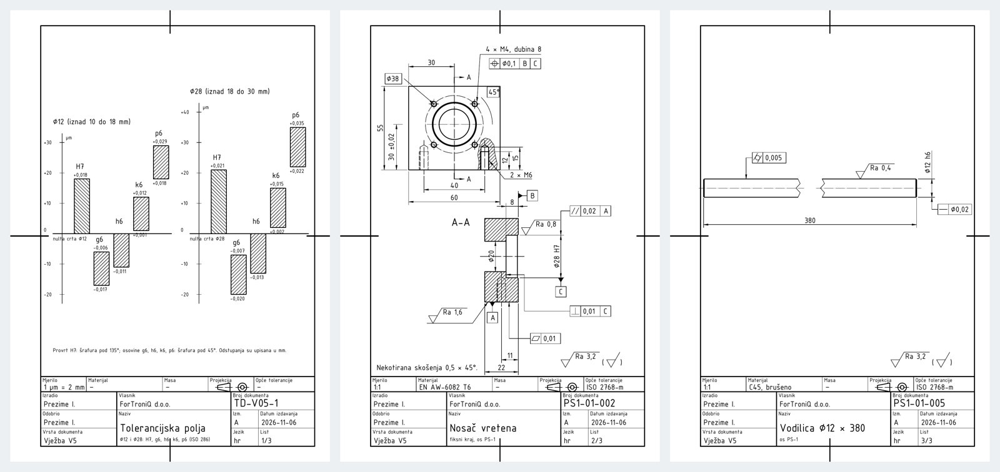
Prije početka pročitaj ovo (2 minute)
- „Klikni“ = jedan klik lijevom tipkom miša. „Upiši“ = tipkaj na tipkovnici.
- Nakon svakog upisa pritisni Enter. U okvirima Upiši uz svaki unos piše Enter – svaki put ga stvarno pritisni.
- Koordinate se pišu X,Y – zarez odvaja X i Y, npr.
210,297. Decimalni broj piše se s točkom, npr.148.5. - Točka
0,0je donji lijevi kut lista. X raste udesno, Y raste prema gore. Sve mjere su u milimetrima. - Pogriješio(la) si? Pritisni Esc (prekida naredbu), a Ctrl+Z poništava zadnju radnju.
- Za ovu vježbu treba ti gotova V1 (list s okvirom, zaglavljem, slojevima i stilom TD_ISO). Ako je nemaš, najprije napravi V1. Postupke iz V2 (kopiranje lista, TEXTEDIT, ispis 2:1) ovdje ponavljamo ukratko.
- Uz svaki korak je kvačica gotovo – označi je kad završiš korak, pa ćeš znati gdje si stao(la).
Ako nešto ne ide
- Piše „Unknown command“ – naredba nije bila pokrenuta. Pritisni Esc, pa ponovno klikni alat (ili upiši naredbu) i tek onda brojeve.
- Ne vidiš što si nacrtao(la) – upiši
ZOOMEnterEEnter. - Crte su na krivom mjestu – provjeri dio B (DYNMODE i OSMODE moraju biti 0) i jesi li pisao(la) točku, a ne zarez, u decimalnom broju.
- Ne znaš gdje si stao(la) – sve koordinate u tablicama su točne; nacrtano usporedi sa slikom koraka. Pogrešnu crtu klikni i pritisni Delete.
- Tekst se ne da kliknuti (TEXTEDIT) – približi ga (ZOOM W) i klikni točno na crtu slova.
- Crta je krive boje ili debljine – bila je odabran krivi sloj. Klikni crtu, pa u popisu slojeva na traci odaberi pravi sloj i pritisni Esc.
Sadržaj
- A. Otvori svoj crtež iz V1 i spremi ga kao V5
- B. Tri postavke na početku
- C. Obriši probu pisma iz V1
- D. Zaglavlje lista 1
- E. Tri lista iste veličine
- F. Stil kota TD_1-1
- G. List 1 – dijagram tolerancijskih polja za Ø12
- H. List 1 – oznake polja i odstupanja
- I. List 1 – dijagram za Ø28 i napomena
- J. List 2 – nosač vretena (tlocrt, presjek A-A, kote)
- K. List 2 – baze i tolerancije oblika
- L. List 2 – položaj rupa i hrapavost
- M. List 2 – zaglavlje
- N. List 3 – vodilica Ø12 h6 × 380
- O. List 3 – zaglavlje
- R. Ispis u PDF
- Z. Spremi, vrati postavke i predaj
AOtvori svoj crtež iz V1 i spremi ga kao V5
1
Pokreni AutoCAD 2027. Na zaslonu Start, pod Recent, klikni sličicu svog crteža iz vježbe 1 (
TD_2026-2027_Prezime_Ime_V01). Ako ga nema, klikni Open… i pronađi ga.

2
Upiši
SAVEAS Enter. U polju File name upiši TD_2026-2027_Prezime_Ime_V05 (svoje prezime i ime) i klikni Save.Upiši:
SAVEAS Enter

Na kartici crteža gore lijevo ime završava s V05. Crtež iz V1 ostao je netaknut.
BTri postavke na početku
3
Upiši redom (nakon svakog Enter):
| Naredba | Vrijednost | Zašto |
|---|---|---|
DYNMODE | 0 | broj koji upišeš znači točno mjesto na listu |
OSMODE | 0 | kursor ne „skače“ na obližnje točke |
GRIDMODE | 0 | nema mreže kvadratića |
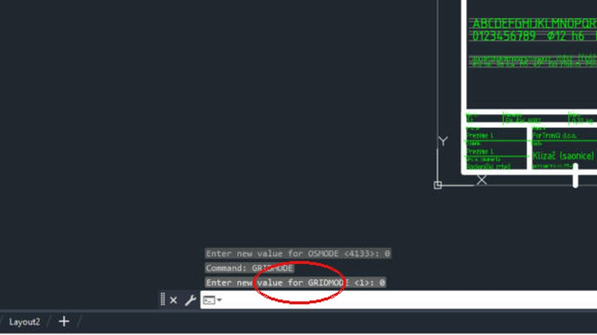

CObriši probu pisma iz V1
4
Upiši
ERASE Enter, W Enter, 22,60 Enter, 198,285 Enter, pa još jednom Enter.Upiši:
ERASE Enter W Enter 22,60 Enter 198,285 Enter (Enter)

Proba pisma i pomoćne crte su obrisane, a okvir i zaglavlje su ostali.
DZaglavlje lista 1
5
Približi zaglavlje:
ZOOM Enter, W Enter, 15,5 Enter, 205,60 Enter. Upiši TEXTEDIT Enter i promijeni tekstove (klik na tekst → upiši novi → Enter; na kraju Esc):Upiši:
ZOOM Enter W Enter 15,5 Enter 205,60 Enter TEXTEDIT Enter| Polje | Sada piše (iz V1) | Upiši |
|---|---|---|
| Mjerilo | 1:1 | 1 \U+00B5m = 2 mm |
| Materijal | EN AW-6082 | – |
| Masa | 0,32 kg | – |
| Opće tolerancije | ISO 2768-m | – |
| Vrsta dokumenta | Radionički crtež | Vježba V5 |
| Naziv | Klizač (saonice) | Tolerancijska polja |
| ispod naziva | pozicionirna os PS-1 | %%c12 i %%c28: H7, g6, h6, k6, p6 (ISO 286) |
| Broj dokumenta | PS1-01-004 | TD-V05-1 |
| Datum izdavanja | 2026-10-09 | 2026-11-06 |
| List | 1/1 | 1/3 |
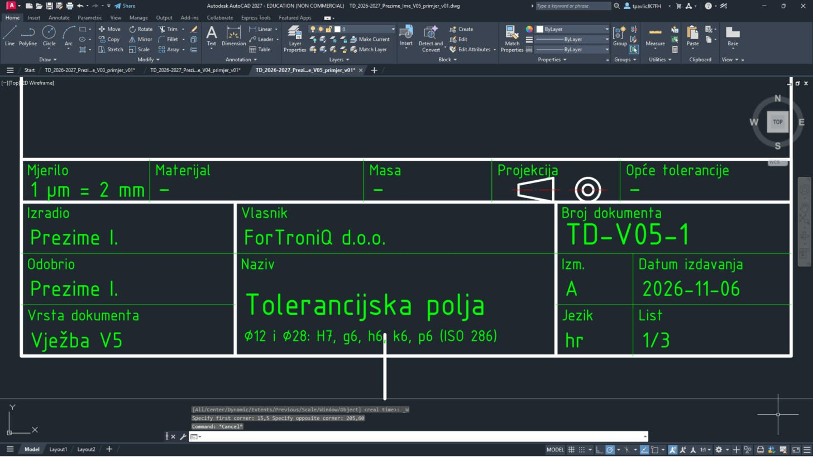
Zaglavlje mijenjaš prije kopiranja listova – tako listovi 2 i 3 već dobiju Vježba V5 i datum. U mjerilu dijagrama piše 1 µm = 2 mm:
\U+00B5 AutoCAD pretvori u µ (može i Alt+0181). %%c postaje Ø kad završiš uređivanje.ETri lista iste veličine
6
Sva tri lista su A4 u mjerilu 1:1 pa okvir kopiraš bez smanjivanja. Udalji pogled:
ZOOM Enter W Enter -10,-10 Enter 680,310 Enter. Zatim COPY Enter W Enter -1,-1 Enter 211,298 Enter.Upiši:
ZOOM Enter W Enter -10,-10 Enter 680,310 Enter COPY Enter W Enter -1,-1 Enter 211,298 Enter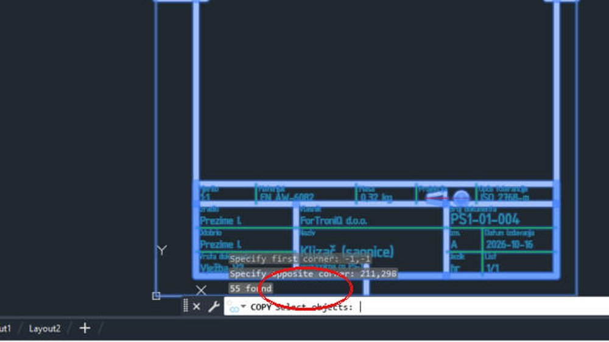
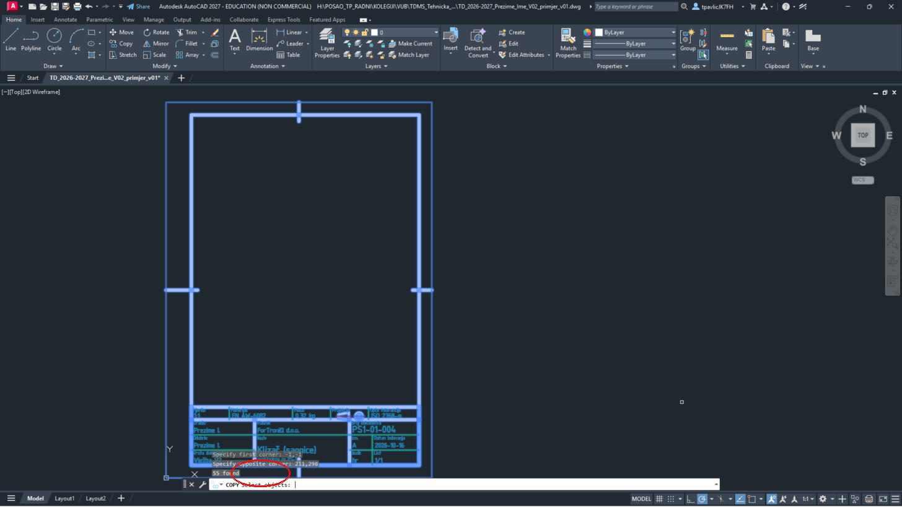
Odabran je cijeli list (okvir i zaglavlje).
7
Enter (kraj odabira), bazna točka
0,0 Enter, druga točka 230,0 Enter, pa još Enter. Ponovi isto za treći list, s drugom točkom 460,0.Upiši: (Enter)
0,0 Enter 230,0 Enter (Enter) COPY Enter W Enter -1,-1 Enter 211,298 Enter (Enter) 0,0 Enter 460,0 Enter (Enter)8
Upiši
ZOOM Enter E Enter.Upiši:
ZOOM Enter E Enter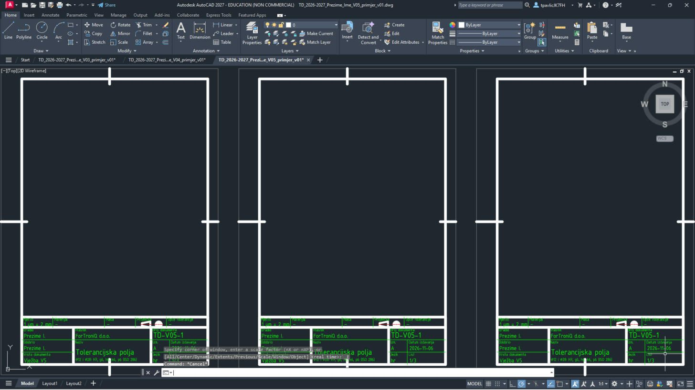
Tri jednaka lista jedan do drugoga: list 1 (0–210), list 2 (230–440) i list 3 (460–670), svi sa zaglavljem lista 1.
FStil kota TD_1-1
9
Isti stil kota kao u V4. Upiši
-DIMSTYLE Enter R Enter ISO-25 Enter, zatim postavke iz tablice, na kraju -DIMSTYLE Enter S Enter TD_1-1 Enter.| # | Sloj | Naredba | Što upisuješ |
|---|---|---|---|
| 1 | -DIMSTYLE | R ISO-25 (vrati stil kota) | |
| 2 | DIMASZ | 3 | |
| 3 | DIMTXT | 3.5 | |
| 4 | DIMTXSTY | TD_ISO | |
| 5 | DIMSCALE | 1 | |
| 6 | DIMDEC | 0 | |
| 7 | DIMDSEP | , | |
| 8 | DIMTIH | 0 | |
| 9 | DIMTOH | 0 | |
| 10 | DIMTAD | 1 | |
| 11 | DIMEXO | 1 | |
| 12 | DIMEXE | 2 | |
| 13 | DIMGAP | 1 | |
| 14 | -DIMSTYLE | S TD_1-1 (spremi kao novi stil kota; ako pita Overwrite? – Y) |
Ako stil TD_1-1 već postoji u crtežu, AutoCAD pita treba li ga zamijeniti – upiši
Y.GList 1 – dijagram tolerancijskih polja za Ø12
10
Približi list 1:
ZOOM Enter W Enter 15,62 Enter 205,250 Enter.Upiši:
ZOOM Enter W Enter 15,62 Enter 205,250 Enter11
Dijagram je u mjerilu 1 µm = 2 mm: nulta crta je nazivna mjera Ø12, a polje provrta H7 (0 do +18 µm) crta se od y = 150 do y = 186. Prvo nulta crta i ljestvica u µm (sloj 04_KOTE), zatim pet polja kao pravokutnici sa šrafurom. Svaki redak tablice je jedna naredba. Upiši naredbu, Enter, pa redom vrijednosti iz retka – nakon svake Enter. Strelica → znači „sljedeća točka“. Kad se u retku promijeni sloj, najprije odaberi taj sloj.
LINE i PLINE bez slova C završi još jednim Enter.| # | Sloj | Naredba | Što upisuješ |
|---|---|---|---|
| 1 | 01_VIDLJIVO | LINE | 28,150 → 106,150 |
| 2 | 04_KOTE | LINE | 34,104 → 34,216 |
| 3 | 04_KOTE | LINE | 32.5,110 → 35.5,110 |
| 4 | 04_KOTE | TEXT | točka 22,108.75, visina 2.5, kut 0, tekst -20 |
| 5 | 04_KOTE | LINE | 32.5,130 → 35.5,130 |
| 6 | 04_KOTE | TEXT | točka 22,128.75, visina 2.5, kut 0, tekst -10 |
| 7 | 04_KOTE | LINE | 32.5,150 → 35.5,150 |
| 8 | 04_KOTE | LINE | 32.5,170 → 35.5,170 |
| 9 | 04_KOTE | TEXT | točka 22,168.75, visina 2.5, kut 0, tekst +10 |
| 10 | 04_KOTE | LINE | 32.5,190 → 35.5,190 |
| 11 | 04_KOTE | TEXT | točka 22,188.75, visina 2.5, kut 0, tekst +20 |
| 12 | 04_KOTE | LINE | 32.5,210 → 35.5,210 |
| 13 | 04_KOTE | TEXT | točka 22,208.75, visina 2.5, kut 0, tekst +30 |
| 14 | 04_KOTE | TEXT | točka 36.5,212, visina 2.5, kut 0, tekst \U+00B5m |
| 15 | 04_KOTE | TEXT | točka 22,151.2, visina 2.5, kut 0, tekst 0 |
| 16 | 04_KOTE | TEXT | točka 28,145.5, visina 2.5, kut 0, tekst nulta crta %%c12 |
| 17 | 01_VIDLJIVO | PLINE | 42,150 → 52,150 → 52,186 → 42,186 → C |
| 18 | 05_SRAFURA | -HATCH | P, ANSI31, mjerilo 0.5, kut 90, W, N, granica: 42,150 → 52,150 → 52,186 → 42,186 → C, na kraju Enter |
| 19 | 01_VIDLJIVO | PLINE | 55,116 → 65,116 → 65,138 → 55,138 → C |
| 20 | 05_SRAFURA | -HATCH | P, ANSI31, mjerilo 0.5, kut 0, W, N, granica: 55,116 → 65,116 → 65,138 → 55,138 → C, na kraju Enter |
| 21 | 01_VIDLJIVO | PLINE | 68,128 → 78,128 → 78,150 → 68,150 → C |
| 22 | 05_SRAFURA | -HATCH | P, ANSI31, mjerilo 0.5, kut 0, W, N, granica: 68,128 → 78,128 → 78,150 → 68,150 → C, na kraju Enter |
| 23 | 01_VIDLJIVO | PLINE | 81,152 → 91,152 → 91,174 → 81,174 → C |
| 24 | 05_SRAFURA | -HATCH | P, ANSI31, mjerilo 0.5, kut 0, W, N, granica: 81,152 → 91,152 → 91,174 → 81,174 → C, na kraju Enter |
| 25 | 01_VIDLJIVO | PLINE | 94,186 → 104,186 → 104,208 → 94,208 → C |
| 26 | 05_SRAFURA | -HATCH | P, ANSI31, mjerilo 0.5, kut 0, W, N, granica: 94,186 → 104,186 → 104,208 → 94,208 → C, na kraju Enter |
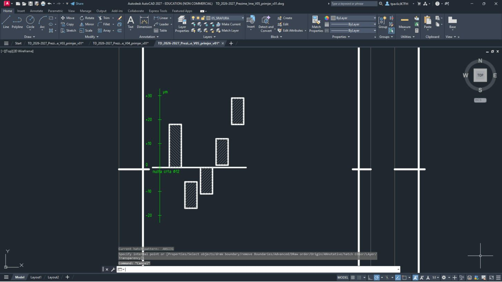
Vodoravna nulta crta, okomita ljestvica od −20 do +30 µm i pet šrafiranih pravokutnika: H7 iznad nulte crte, g6 i h6 ispod, k6 i p6 iznad.
Polje provrta (H7) šrafira se pod kutom
90 (crte padaju udesno, 135°), polja osovina pod 0 (45°) – tako se na prvi pogled vidi što je provrt, a što osovina. Posebni znakovi: %%c = Ø, %%p = ±, %%d = °; × upiši kao \U+00D7, µ kao \U+00B5. Znak minus (−) u tablici možeš upisati običnom crticom -.HList 1 – oznake polja i odstupanja
12
Iznad svakog polja upiši oznaku (H7, g6 …), a uz gornji i donji rub odstupanje u mm:
| # | Sloj | Naredba | Što upisuješ |
|---|---|---|---|
| 1 | 04_KOTE | TEXT | točka 43.2,192.5, visina 3.5, kut 0, tekst H7 |
| 2 | 04_KOTE | TEXT | točka 41.5,187.5, visina 2.5, kut 0, tekst +0,018 |
| 3 | 04_KOTE | TEXT | točka 56.2,144.5, visina 3.5, kut 0, tekst g6 |
| 4 | 04_KOTE | TEXT | točka 54.5,139.5, visina 2.5, kut 0, tekst -0,006 |
| 5 | 04_KOTE | TEXT | točka 54.5,112, visina 2.5, kut 0, tekst -0,017 |
| 6 | 04_KOTE | TEXT | točka 69.2,156.5, visina 3.5, kut 0, tekst h6 |
| 7 | 04_KOTE | TEXT | točka 67.5,124, visina 2.5, kut 0, tekst -0,011 |
| 8 | 04_KOTE | TEXT | točka 82.2,180.5, visina 3.5, kut 0, tekst k6 |
| 9 | 04_KOTE | TEXT | točka 80.5,175.5, visina 2.5, kut 0, tekst +0,012 |
| 10 | 04_KOTE | TEXT | točka 80.5,148, visina 2.5, kut 0, tekst +0,001 |
| 11 | 04_KOTE | TEXT | točka 95.2,214.5, visina 3.5, kut 0, tekst p6 |
| 12 | 04_KOTE | TEXT | točka 93.5,209.5, visina 2.5, kut 0, tekst +0,029 |
| 13 | 04_KOTE | TEXT | točka 93.5,182, visina 2.5, kut 0, tekst +0,018 |
| 14 | 04_KOTE | TEXT | točka 28,222, visina 3.5, kut 0, tekst %%c12 (iznad 10 do 18 mm) |
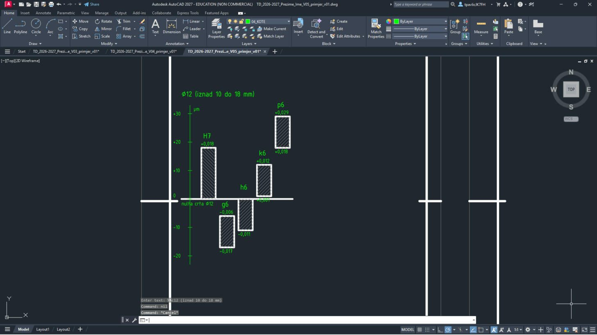
Svako polje ima oznaku i dva odstupanja (h6 ima gornje odstupanje 0 pa se upisuje samo donje); iznad dijagrama naslov Ø12 (iznad 10 do 18 mm).
IList 1 – dijagram za Ø28 i napomena
13
Desno nacrtaj isti dijagram za Ø28 (razred iznad 18 do 30 mm) – polja su šira jer je promjer veći:
| # | Sloj | Naredba | Što upisuješ |
|---|---|---|---|
| 1 | 01_VIDLJIVO | LINE | 118,150 → 196,150 |
| 2 | 04_KOTE | LINE | 124,104 → 124,236 |
| 3 | 04_KOTE | LINE | 122.5,110 → 125.5,110 |
| 4 | 04_KOTE | TEXT | točka 112,108.75, visina 2.5, kut 0, tekst -20 |
| 5 | 04_KOTE | LINE | 122.5,130 → 125.5,130 |
| 6 | 04_KOTE | TEXT | točka 112,128.75, visina 2.5, kut 0, tekst -10 |
| 7 | 04_KOTE | LINE | 122.5,150 → 125.5,150 |
| 8 | 04_KOTE | LINE | 122.5,170 → 125.5,170 |
| 9 | 04_KOTE | TEXT | točka 112,168.75, visina 2.5, kut 0, tekst +10 |
| 10 | 04_KOTE | LINE | 122.5,190 → 125.5,190 |
| 11 | 04_KOTE | TEXT | točka 112,188.75, visina 2.5, kut 0, tekst +20 |
| 12 | 04_KOTE | LINE | 122.5,210 → 125.5,210 |
| 13 | 04_KOTE | TEXT | točka 112,208.75, visina 2.5, kut 0, tekst +30 |
| 14 | 04_KOTE | LINE | 122.5,230 → 125.5,230 |
| 15 | 04_KOTE | TEXT | točka 112,228.75, visina 2.5, kut 0, tekst +40 |
| 16 | 04_KOTE | TEXT | točka 126.5,232, visina 2.5, kut 0, tekst \U+00B5m |
| 17 | 04_KOTE | TEXT | točka 112,151.2, visina 2.5, kut 0, tekst 0 |
| 18 | 04_KOTE | TEXT | točka 118,145.5, visina 2.5, kut 0, tekst nulta crta %%c28 |
| 19 | 01_VIDLJIVO | PLINE | 132,150 → 142,150 → 142,192 → 132,192 → C |
| 20 | 05_SRAFURA | -HATCH | P, ANSI31, mjerilo 0.5, kut 90, W, N, granica: 132,150 → 142,150 → 142,192 → 132,192 → C, na kraju Enter |
| 21 | 04_KOTE | TEXT | točka 133.2,198.5, visina 3.5, kut 0, tekst H7 |
| 22 | 04_KOTE | TEXT | točka 131.5,193.5, visina 2.5, kut 0, tekst +0,021 |
| 23 | 01_VIDLJIVO | PLINE | 145,110 → 155,110 → 155,136 → 145,136 → C |
| 24 | 05_SRAFURA | -HATCH | P, ANSI31, mjerilo 0.5, kut 0, W, N, granica: 145,110 → 155,110 → 155,136 → 145,136 → C, na kraju Enter |
| 25 | 04_KOTE | TEXT | točka 146.2,142.5, visina 3.5, kut 0, tekst g6 |
| 26 | 04_KOTE | TEXT | točka 144.5,137.5, visina 2.5, kut 0, tekst -0,007 |
| 27 | 04_KOTE | TEXT | točka 144.5,106, visina 2.5, kut 0, tekst -0,020 |
| 28 | 01_VIDLJIVO | PLINE | 158,124 → 168,124 → 168,150 → 158,150 → C |
| 29 | 05_SRAFURA | -HATCH | P, ANSI31, mjerilo 0.5, kut 0, W, N, granica: 158,124 → 168,124 → 168,150 → 158,150 → C, na kraju Enter |
| 30 | 04_KOTE | TEXT | točka 159.2,156.5, visina 3.5, kut 0, tekst h6 |
| 31 | 04_KOTE | TEXT | točka 157.5,120, visina 2.5, kut 0, tekst -0,013 |
| 32 | 01_VIDLJIVO | PLINE | 171,154 → 181,154 → 181,180 → 171,180 → C |
| 33 | 05_SRAFURA | -HATCH | P, ANSI31, mjerilo 0.5, kut 0, W, N, granica: 171,154 → 181,154 → 181,180 → 171,180 → C, na kraju Enter |
| 34 | 04_KOTE | TEXT | točka 172.2,186.5, visina 3.5, kut 0, tekst k6 |
| 35 | 04_KOTE | TEXT | točka 170.5,181.5, visina 2.5, kut 0, tekst +0,015 |
| 36 | 04_KOTE | TEXT | točka 170.5,150, visina 2.5, kut 0, tekst +0,002 |
| 37 | 01_VIDLJIVO | PLINE | 184,194 → 194,194 → 194,220 → 184,220 → C |
| 38 | 05_SRAFURA | -HATCH | P, ANSI31, mjerilo 0.5, kut 0, W, N, granica: 184,194 → 194,194 → 194,220 → 184,220 → C, na kraju Enter |
| 39 | 04_KOTE | TEXT | točka 185.2,226.5, visina 3.5, kut 0, tekst p6 |
| 40 | 04_KOTE | TEXT | točka 183.5,221.5, visina 2.5, kut 0, tekst +0,035 |
| 41 | 04_KOTE | TEXT | točka 183.5,190, visina 2.5, kut 0, tekst +0,022 |
| 42 | 04_KOTE | TEXT | točka 118,242, visina 3.5, kut 0, tekst %%c28 (iznad 18 do 30 mm) |
14
Na dnu lista dodaj napomenu o šrafuri:
| # | Sloj | Naredba | Što upisuješ |
|---|---|---|---|
| 1 | 04_KOTE | TEXT | točka 28,72, visina 2.5, kut 0, tekst Provrt H7: šrafura pod 135%%d; osovine g6, h6, k6, p6: šrafura pod 45%%d. Odstupanja su upisana u mm. |
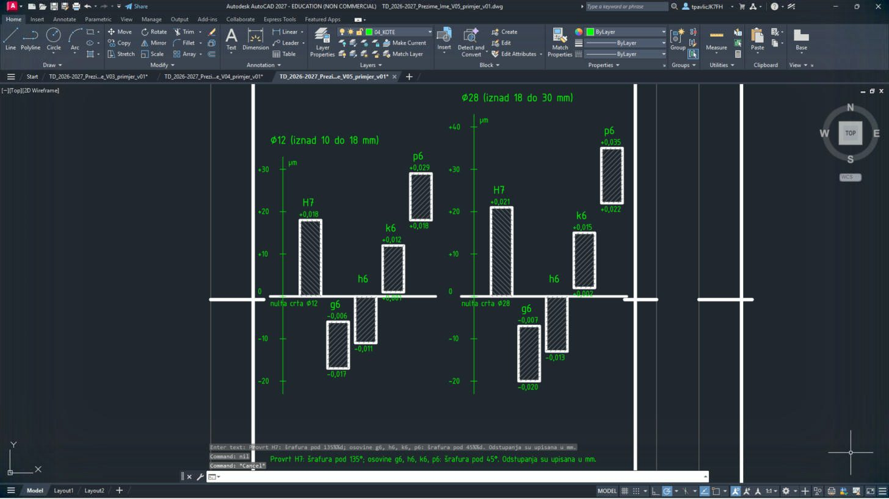
Dva dijagrama jedan do drugoga i napomena iznad zaglavlja.
Usporedi dijagrame: za isti stupanj (npr. 6) polje za Ø28 je šire (13 µm) nego za Ø12 (11 µm) – tolerancija raste s promjerom.
JList 2 – nosač vretena (tlocrt, presjek A-A, kote)
15
Približi list 2:
ZOOM Enter W Enter 240,52 Enter 440,278 Enter.Upiši:
ZOOM Enter W Enter 240,52 Enter 440,278 Enter16
Na listu 2 je nosač vretena iz V4, ali presjek A-A je sada ispod tlocrta (mjesta za oznake tolerancija). Nacrtaj tlocrt, djelomični presjek M6, presjek A-A i osnovne kote – postupak je isti kao u V4, samo su točke na listu 2:
| # | Sloj | Naredba | Što upisuješ |
|---|---|---|---|
| 1 | 01_VIDLJIVO | PLINE | 275,192 → 335,192 → 335,247 → 275,247 → C |
| 2 | 03_OSI | LINE | 305,190 → 305,249 |
| 3 | 03_OSI | LINE | 287,222 → 323,222 |
| 4 | 01_VIDLJIVO | LINE | 305,249 → 305,253 |
| 5 | 04_KOTE | -DIMSTYLE | R TD_1-1 (vrati stil kota) |
| 6 | 04_KOTE | LEADER | strelica 311.5,253 → kraj 305,253, Enter, Enter, N (strelica bez teksta) |
| 7 | 04_KOTE | TEXT | točka 313,251.25, visina 3.5, kut 0, tekst A |
| 8 | 01_VIDLJIVO | LINE | 305,190 → 305,186 |
| 9 | 04_KOTE | LEADER | strelica 311.5,186 → kraj 305,186, Enter, Enter, N (strelica bez teksta) |
| 10 | 04_KOTE | TEXT | točka 313,184.25, visina 3.5, kut 0, tekst A |
| 11 | 01_VIDLJIVO | CIRCLE | središte 305,222, polumjer 14.5 |
| 12 | 01_VIDLJIVO | CIRCLE | središte 305,222, polumjer 14 |
| 13 | 01_VIDLJIVO | CIRCLE | središte 305,222, polumjer 10 |
| 14 | 03_OSI | CIRCLE | središte 305,222, polumjer 19 |
| 15 | 01_VIDLJIVO | CIRCLE | središte 318.435,235.435, polumjer 1.65 |
| 16 | 04_KOTE | ARC | C, središte 318.435,235.435, početak 318.0877,237.4046, kraj 320.4046,235.7823 |
| 17 | 04_KOTE | LINE | 315.235,235.435 → 321.635,235.435 |
| 18 | 04_KOTE | LINE | 318.435,232.235 → 318.435,238.635 |
| 19 | 01_VIDLJIVO | CIRCLE | središte 291.565,235.435, polumjer 1.65 |
| 20 | 04_KOTE | ARC | C, središte 291.565,235.435, početak 291.2177,237.4046, kraj 293.5346,235.7823 |
| 21 | 04_KOTE | LINE | 288.365,235.435 → 294.765,235.435 |
| 22 | 04_KOTE | LINE | 291.565,232.235 → 291.565,238.635 |
| 23 | 01_VIDLJIVO | CIRCLE | središte 291.565,208.565, polumjer 1.65 |
| 24 | 04_KOTE | ARC | C, središte 291.565,208.565, početak 291.2177,210.5346, kraj 293.5346,208.9123 |
| 25 | 04_KOTE | LINE | 288.365,208.565 → 294.765,208.565 |
| 26 | 04_KOTE | LINE | 291.565,205.365 → 291.565,211.765 |
| 27 | 01_VIDLJIVO | CIRCLE | središte 318.435,208.565, polumjer 1.65 |
| 28 | 04_KOTE | ARC | C, središte 318.435,208.565, početak 318.0877,210.5346, kraj 320.4046,208.9123 |
| 29 | 04_KOTE | LINE | 315.235,208.565 → 321.635,208.565 |
| 30 | 04_KOTE | LINE | 318.435,205.365 → 318.435,211.765 |
| 31 | 03_OSI | LINE | 285,189 → 285,211.5 |
| 32 | 03_OSI | LINE | 325,189 → 325,211.5 |
| 33 | 02_NEVIDLJIVO | LINE | 282.5,192 → 282.5,207 |
| 34 | 02_NEVIDLJIVO | LINE | 287.5,192 → 287.5,207 |
| 35 | 02_NEVIDLJIVO | PLINE | 282.5,207 → 285,208.4434 → 287.5,207, Enter |
| 36 | 02_NEVIDLJIVO | LINE | 282,192 → 282,204 |
| 37 | 02_NEVIDLJIVO | LINE | 288,192 → 288,204 |
| 38 | 02_NEVIDLJIVO | LINE | 282,204 → 288,204 |
| 39 | 04_KOTE | PLINE | 320.6,192 → 321.2,197 → 320.4,202 → 321.3,207 → 322.8,211.5 → 325.5,213 → 328.5,212 → 331,208.5 → 331.8,202 → 333.2,196 → 332.6,192, Enter |
| 40 | 01_VIDLJIVO | PLINE | 322.5,192 → 322.5,207 → 325,208.4434 → 327.5,207 → 327.5,192, Enter |
| 41 | 01_VIDLJIVO | LINE | 322.5,207 → 327.5,207 |
| 42 | 01_VIDLJIVO | LINE | 322,204 → 328,204 |
| 43 | 04_KOTE | LINE | 322,192 → 322,204 |
| 44 | 04_KOTE | LINE | 328,192 → 328,204 |
| 45 | 05_SRAFURA | -HATCH | P, ANSI31, mjerilo 0.5, kut 0, W, N, granica: 320.6,192 → 322.5,192 → 322.5,207 → 325,208.4434 → 327.5,207 → 327.5,192 → 332.6,192 → 333.2,196 → 331.8,202 → 331,208.5 → 328.5,212 → 325.5,213 → 322.8,211.5 → 321.3,207 → 320.4,202 → 321.2,197 → C, na kraju Enter |
| 46 | 01_VIDLJIVO | PLINE | 325,160 → 347,160 → 347,149.5 → 346.5,149 → 339,149 → 339,145 → 325,145 → C |
| 47 | 05_SRAFURA | -HATCH | P, ANSI31, mjerilo 0.5, kut 0, W, N, granica: 325,160 → 347,160 → 347,149.5 → 346.5,149 → 339,149 → 339,145 → 325,145 → C, na kraju Enter |
| 48 | 01_VIDLJIVO | PLINE | 325,105 → 347,105 → 347,120.5 → 346.5,121 → 339,121 → 339,125 → 325,125 → C |
| 49 | 05_SRAFURA | -HATCH | P, ANSI31, mjerilo 0.5, kut 0, W, N, granica: 325,105 → 347,105 → 347,120.5 → 346.5,121 → 339,121 → 339,125 → 325,125 → C, na kraju Enter |
| 50 | 01_VIDLJIVO | LINE | 339,125 → 339,145 |
| 51 | 01_VIDLJIVO | LINE | 346.5,121 → 346.5,149 |
| 52 | 03_OSI | LINE | 322,135 → 351,135 |
| 53 | 03_OSI | LINE | 336,102 → 336,124.5 |
| 54 | 02_NEVIDLJIVO | LINE | 333.5,105 → 333.5,120 |
| 55 | 02_NEVIDLJIVO | LINE | 338.5,105 → 338.5,120 |
| 56 | 02_NEVIDLJIVO | PLINE | 333.5,120 → 336,121.4434 → 338.5,120, Enter |
| 57 | 02_NEVIDLJIVO | LINE | 333,105 → 333,117 |
| 58 | 02_NEVIDLJIVO | LINE | 339,105 → 339,117 |
| 59 | 02_NEVIDLJIVO | LINE | 333,117 → 339,117 |
| 60 | 04_KOTE | TEXT | točka 303,155, visina 5, kut 0, tekst A-A |
| 61 | 04_KOTE | DIMLINEAR | 275,192 → 272,222, T Enter tekst 30 %%p0,02, V, mjesto kotne crte 267,207 |
| 62 | 04_KOTE | DIMLINEAR | 347,121 → 347,149, T Enter tekst %%c28 H7, V, mjesto kotne crte 375,135 |
| 63 | 04_KOTE | DIMLINEAR | 347,160 → 339,149, H, mjesto kotne crte 343,168 |
| 64 | 04_KOTE | DIMLINEAR | 275,247 → 305,251, H, mjesto kotne crte 290,260 |
| 65 | 04_KOTE | DIMLINEAR | 275,192 → 275,247, V, mjesto kotne crte 259,219.5 |
| 66 | 04_KOTE | DIMLINEAR | 275,192 → 335,192, H, mjesto kotne crte 305,171 |
| 67 | 04_KOTE | DIMLINEAR | 325,105 → 347,105, H, mjesto kotne crte 336,59 |
| 68 | 04_KOTE | DIMLINEAR | 285,189 → 325,189, H, mjesto kotne crte 305,179 |
| 69 | 04_KOTE | DIMLINEAR | 347,105 → 336,102, H, mjesto kotne crte 341.5,67 |
| 70 | 04_KOTE | LEADER | strelica 319.8492,236.8492 → kraj 325,268, Enter, tekst: 4 \U+00D7 M4, dubina 8 (svaki redak Enter, na kraju još Enter) |
| 71 | 04_KOTE | LEADER | strelica 328,198 → kraj 341,186, Enter, tekst: 2 \U+00D7 M6 (svaki redak Enter, na kraju još Enter) |
| 72 | 04_KOTE | DIMLINEAR | 328,192 → 328,204, V, mjesto kotne crte 341,198 |
| 73 | 04_KOTE | DIMLINEAR | 327.5,192 → 327.5,207, V, mjesto kotne crte 348,199.5 |
| 74 | 04_KOTE | DIMLINEAR | 332,125 → 332,145, T Enter tekst %%c20, V, mjesto kotne crte 332,135 |
| 75 | 04_KOTE | TEXT | točka 254,60, visina 3.5, kut 0, tekst Nekotirana skošenja 0,5 \U+00D7 45%%d. |

Tlocrt s rupama i djelomičnim presjekom gore, presjek A-A dolje, kote i napomena o skošenjima.
Posebni znakovi:
%%c = Ø, %%p = ±, %%d = °; × upiši kao \U+00D7, µ kao \U+00B5. Znak minus (−) u tablici možeš upisati običnom crticom -.KList 2 – baze i tolerancije oblika
17
Oznake baza A, B i C (ISO 5459): ispunjeni trokut na plohi ili kotnoj crti, kratka crta i kvadratić sa slovom. Trokut je šrafura
SOLID unutar zatvorene polilinije:| # | Sloj | Naredba | Što upisuješ |
|---|---|---|---|
| 1 | 04_KOTE | -HATCH | P, SOLID, mjerilo _W, kut _N, W, N, granica: 330,102.23 → C, na kraju Enter |
| 2 | 04_KOTE | PLINE | 331.6,105 → 328.4,105 → 330,102.23 → C |
| 3 | 04_KOTE | LINE | 330,102.23 → 330,98.23 |
| 4 | 04_KOTE | PLINE | 326.5,91.23 → 333.5,91.23 → 333.5,98.23 → 326.5,98.23 → C |
| 5 | 04_KOTE | TEXT | točka 328.8,92.98, visina 3.5, kut 0, tekst A |
| 6 | 04_KOTE | LINE | 347,170 → 347,178 |
| 7 | 04_KOTE | -HATCH | P, SOLID, mjerilo _W, kut _N, W, N, granica: 349.77,175 → C, na kraju Enter |
| 8 | 04_KOTE | PLINE | 347,176.6 → 347,173.4 → 349.77,175 → C |
| 9 | 04_KOTE | LINE | 349.77,175 → 352.77,175 |
| 10 | 04_KOTE | PLINE | 352.77,171.5 → 359.77,171.5 → 359.77,178.5 → 352.77,178.5 → C |
| 11 | 04_KOTE | TEXT | točka 355.07,173.25, visina 3.5, kut 0, tekst B |
| 12 | 04_KOTE | -HATCH | P, SOLID, mjerilo _W, kut _N, W, N, granica: 375,118.23 → C, na kraju Enter |
| 13 | 04_KOTE | PLINE | 376.6,121 → 373.4,121 → 375,118.23 → C |
| 14 | 04_KOTE | LINE | 375,118.23 → 375,115.23 |
| 15 | 04_KOTE | PLINE | 371.5,108.23 → 378.5,108.23 → 378.5,115.23 → 371.5,115.23 → C |
| 16 | 04_KOTE | TEXT | točka 373.8,109.98, visina 3.5, kut 0, tekst C |
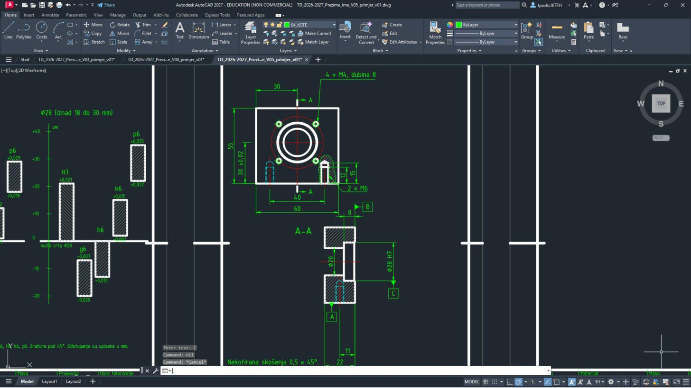
A na donjoj plohi presjeka, B uz kotu 8 (plohe prirubnice), C uz kotu Ø28 H7 (os provrta).
18
Okviri tolerancija (ISO 1101): pokazna crta sa strelicom (LEADER bez teksta), pravokutnik, znak, vrijednost i baza. Ravnost 0,01 na plohi A, paralelnost 0,02 prema A i okomitost 0,01 prema C:
| # | Sloj | Naredba | Što upisuješ |
|---|---|---|---|
| 1 | 04_KOTE | LISP | (command "_.LEADER" "341,105" "341,81" "355,81" "" "" "_N") |
| 2 | 04_KOTE | PLINE | 355,77.5 → 374.8,77.5 → 374.8,84.5 → 355,84.5 → C |
| 3 | 04_KOTE | PLINE | 355.9,79.6 → 359.7,79.6 → 361.1,82.4 → 357.3,82.4 → C |
| 4 | 04_KOTE | LINE | 362,77.5 → 362,84.5 |
| 5 | 04_KOTE | TEXT | točka 363.5,79.25, visina 3.5, kut 0, tekst 0,01 |
| 6 | 04_KOTE | LISP | (command "_.LEADER" "375,149" "375,165" "381,165" "" "" "_N") |
| 7 | 04_KOTE | PLINE | 381,161.5 → 407.8,161.5 → 407.8,168.5 → 381,168.5 → C |
| 8 | 04_KOTE | LINE | 382.2,163 → 384.2,167 |
| 9 | 04_KOTE | LINE | 384.8,163 → 386.8,167 |
| 10 | 04_KOTE | LINE | 388,161.5 → 388,168.5 |
| 11 | 04_KOTE | TEXT | točka 389.5,163.25, visina 3.5, kut 0, tekst 0,02 |
| 12 | 04_KOTE | LINE | 400.8,161.5 → 400.8,168.5 |
| 13 | 04_KOTE | TEXT | točka 403.1,163.25, visina 3.5, kut 0, tekst A |
| 14 | 04_KOTE | LISP | (command "_.LEADER" "339,123" "351,123" "351,99" "381,99" "" "" "_N") |
| 15 | 04_KOTE | PLINE | 381,95.5 → 407.8,95.5 → 407.8,102.5 → 381,102.5 → C |
| 16 | 04_KOTE | LINE | 384.5,97 → 384.5,101.2 |
| 17 | 04_KOTE | LINE | 382,97 → 387,97 |
| 18 | 04_KOTE | LINE | 388,95.5 → 388,102.5 |
| 19 | 04_KOTE | TEXT | točka 389.5,97.25, visina 3.5, kut 0, tekst 0,01 |
| 20 | 04_KOTE | LINE | 400.8,95.5 → 400.8,102.5 |
| 21 | 04_KOTE | TEXT | točka 403.1,97.25, visina 3.5, kut 0, tekst C |
Tri okvira s pokaznim crtama: ravnost 0,01, paralelnost // 0,02 prema A i okomitost ⊥ 0,01 prema C.
AutoCAD ima i naredbu
TOLERANCE, ali ovdje okvire crtaš crtama i tekstom – tako sam vidiš od čega se okvir sastoji i dobiješ točno isti izgled kao na rješenju.LList 2 – položaj rupa i hrapavost
19
Tolerancija položaja Ø0,1 za četiri rupe M4 prema bazama B i C, teorijski točne mjere Ø38 i 45° (u pravokutniku) i oznake hrapavosti (ISO 21920-1):
| # | Sloj | Naredba | Što upisuješ |
|---|---|---|---|
| 1 | 04_KOTE | PLINE | 328,258.5 → 361.8,258.5 → 361.8,265.5 → 328,265.5 → C |
| 2 | 04_KOTE | CIRCLE | središte 331.5,262, polumjer 1.6 |
| 3 | 04_KOTE | LINE | 328.7,262 → 334.3,262 |
| 4 | 04_KOTE | LINE | 331.5,259.2 → 331.5,264.8 |
| 5 | 04_KOTE | LINE | 335,258.5 → 335,265.5 |
| 6 | 04_KOTE | TEXT | točka 336.5,260.25, visina 3.5, kut 0, tekst %%c0,1 |
| 7 | 04_KOTE | LINE | 347.8,258.5 → 347.8,265.5 |
| 8 | 04_KOTE | TEXT | točka 350.1,260.25, visina 3.5, kut 0, tekst B |
| 9 | 04_KOTE | LINE | 354.8,258.5 → 354.8,265.5 |
| 10 | 04_KOTE | TEXT | točka 357.1,260.25, visina 3.5, kut 0, tekst C |
| 11 | 04_KOTE | LEADER | strelica 291.565,235.435 → kraj 272,252, Enter, Enter, N (strelica bez teksta) |
| 12 | 04_KOTE | TEXT | točka 260.5,250.25, visina 3.5, kut 0, tekst %%c38 |
| 13 | 04_KOTE | PLINE | 259.5,248.5 → 270.5,248.5 → 270.5,255.5 → 259.5,255.5 → C |
| 14 | 04_KOTE | TEXT | točka 327.5,241.5, visina 3.5, kut 0, tekst 45%%d |
| 15 | 04_KOTE | PLINE | 326.5,239.75 → 334.5,239.75 → 334.5,246.75 → 326.5,246.75 → C |
| 16 | 04_KOTE | ARC | C, središte 305,222, početak 330,222, kraj 322.6777,239.6777 |
| 17 | 04_KOTE | PLINE | 349.1132,154 → 352,149 → 357.7735,159, Enter |
| 18 | 04_KOTE | LINE | 349.1132,154 → 354.8868,154 |
| 19 | 04_KOTE | LINE | 357.7735,159 → 374.4735,159 |
| 20 | 04_KOTE | TEXT | točka 358.5735,154.6, visina 3.5, kut 0, tekst Ra 0,8 |
| 21 | 04_KOTE | LEADER | strelica 327,105 → kraj 317,91, Enter, Enter, N (strelica bez teksta) |
| 22 | 04_KOTE | LINE | 317,91 → 287,91 |
| 23 | 04_KOTE | PLINE | 288.1132,96 → 291,91 → 296.7735,101, Enter |
| 24 | 04_KOTE | LINE | 288.1132,96 → 293.8868,96 |
| 25 | 04_KOTE | LINE | 296.7735,101 → 313.4735,101 |
| 26 | 04_KOTE | TEXT | točka 297.5735,96.6, visina 3.5, kut 0, tekst Ra 1,6 |
| 27 | 04_KOTE | PLINE | 375.1132,67 → 378,62 → 383.7735,72, Enter |
| 28 | 04_KOTE | LINE | 375.1132,67 → 380.8868,67 |
| 29 | 04_KOTE | LINE | 383.7735,72 → 400.4735,72 |
| 30 | 04_KOTE | TEXT | točka 384.5735,67.6, visina 3.5, kut 0, tekst Ra 3,2 |
| 31 | 04_KOTE | TEXT | točka 402,63.5, visina 3.5, kut 0, tekst ( |
| 32 | 04_KOTE | PLINE | 405.1132,67 → 408,62 → 413.7735,72, Enter |
| 33 | 04_KOTE | LINE | 405.1132,67 → 410.8868,67 |
| 34 | 04_KOTE | TEXT | točka 414,63.5, visina 3.5, kut 0, tekst ) |

Okvir položaja Ø0,1 | B | C iznad tlocrta, Ø38 i 45° uokvireni, Ra 0,8 na provrtu, Ra 1,6 na plohi A i opća oznaka Ra 3,2 (√) iznad zaglavlja.
Znak hrapavosti je polilinija od tri točke (kraći i dulji krak) i vodoravna crta; tekst Ra ide iznad dulje crte.
MList 2 – zaglavlje
20
Približi zaglavlje:
ZOOM Enter, W Enter, 245,5 Enter, 435,60 Enter. Upiši TEXTEDIT Enter i promijeni tekstove (klik na tekst → upiši novi → Enter; na kraju Esc):Upiši:
ZOOM Enter W Enter 245,5 Enter 435,60 Enter TEXTEDIT Enter| Polje | Sada piše (kopija lista 1) | Upiši |
|---|---|---|
| Mjerilo | 1 µm = 2 mm | 1:1 |
| Materijal | – | EN AW-6082 T6 |
| Opće tolerancije | – | ISO 2768-m |
| Naziv | Tolerancijska polja | Nosač vretena |
| ispod naziva | Ø12 i Ø28: H7, g6 … | fiksni kraj, os PS-1 |
| Broj dokumenta | TD-V05-1 | PS1-01-002 |
| List | 1/3 | 2/3 |
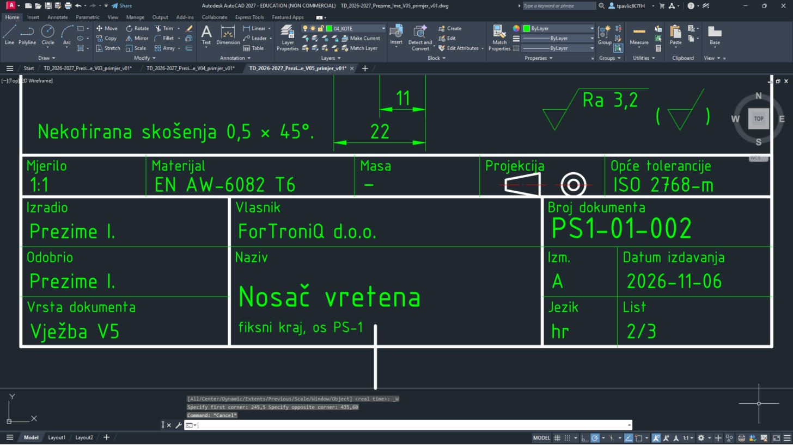
Klikni točno na crtu slova. Crticu – možeš upisati i kao običnu crticu
-.NList 3 – vodilica Ø12 h6 × 380
21
Približi list 3:
ZOOM Enter W Enter 470,52 Enter 670,278 Enter.Upiši:
ZOOM Enter W Enter 470,52 Enter 670,278 Enter22
Vodilica je duga 380 mm pa je crtaš prekinutu: dva kraja s valovitim crtama prekida (sloj 04_KOTE), a kota 380 ima upisan tekst jer stvarni razmak na crtežu nije 380.
| # | Sloj | Naredba | Što upisuješ |
|---|---|---|---|
| 1 | 01_VIDLJIVO | PLINE | 544,186 → 482.5,186 → 482,185.5 → 482,174.5 → 482.5,174 → 544,174, Enter |
| 2 | 01_VIDLJIVO | PLINE | 560,186 → 621.5,186 → 622,185.5 → 622,174.5 → 621.5,174 → 560,174, Enter |
| 3 | 01_VIDLJIVO | LINE | 482.5,186 → 482.5,174 |
| 4 | 01_VIDLJIVO | LINE | 621.5,186 → 621.5,174 |
| 5 | 04_KOTE | PLINE | 544,186 → 545.5,183 → 542.8,180 → 545.5,177 → 544,174, Enter |
| 6 | 04_KOTE | PLINE | 560,186 → 561.5,183 → 558.8,180 → 561.5,177 → 560,174, Enter |
| 7 | 03_OSI | LINE | 479,180 → 548,180 |
| 8 | 03_OSI | LINE | 556,180 → 625,180 |
| 9 | 04_KOTE | DIMLINEAR | 482,174.5 → 622,174.5, T Enter tekst 380, H, mjesto kotne crte 552,156 |
| 10 | 04_KOTE | DIMLINEAR | 622,174 → 622,186, T Enter tekst %%c12 h6, V, mjesto kotne crte 632,180 |
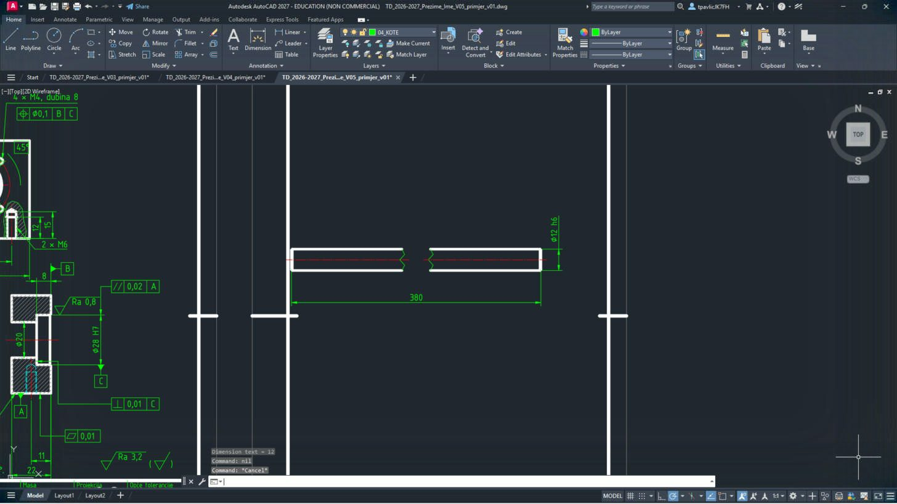
Dva komada vodilice s valovitim prekidom u sredini, os, kota 380 i Ø12 h6.
Kod kote 380 obavezno upiši
T i tekst 380 – inače bi AutoCAD upisao izmjereni razmak (140).23
Tolerancije oblika i hrapavost: pravocrtnost osi Ø0,02, cilindričnost 0,005, Ra 0,4 na plaštu i opća oznaka Ra 3,2:
| # | Sloj | Naredba | Što upisuješ |
|---|---|---|---|
| 1 | 04_KOTE | LISP | (command "_.LEADER" "632,174" "632,166" "636,166" "" "" "_N") |
| 2 | 04_KOTE | PLINE | 636,162.5 → 658.25,162.5 → 658.25,169.5 → 636,169.5 → C |
| 3 | 04_KOTE | LINE | 636.9,166 → 642.1,166 |
| 4 | 04_KOTE | LINE | 643,162.5 → 643,169.5 |
| 5 | 04_KOTE | TEXT | točka 644.5,164.25, visina 3.5, kut 0, tekst %%c0,02 |
| 6 | 04_KOTE | LISP | (command "_.LEADER" "510,186" "510,200" "514,200" "" "" "_N") |
| 7 | 04_KOTE | PLINE | 514,196.5 → 536.25,196.5 → 536.25,203.5 → 514,203.5 → C |
| 8 | 04_KOTE | CIRCLE | središte 517.5,200, polumjer 1.5 |
| 9 | 04_KOTE | LINE | 514.901,198.4983 → 517.501,203.0017 |
| 10 | 04_KOTE | LINE | 517.499,196.9983 → 520.099,201.5017 |
| 11 | 04_KOTE | LINE | 521,196.5 → 521,203.5 |
| 12 | 04_KOTE | TEXT | točka 522.5,198.25, visina 3.5, kut 0, tekst 0,005 |
| 13 | 04_KOTE | PLINE | 582.1132,191 → 585,186 → 590.7735,196, Enter |
| 14 | 04_KOTE | LINE | 582.1132,191 → 587.8868,191 |
| 15 | 04_KOTE | LINE | 590.7735,196 → 607.4735,196 |
| 16 | 04_KOTE | TEXT | točka 591.5735,191.6, visina 3.5, kut 0, tekst Ra 0,4 |
| 17 | 04_KOTE | PLINE | 605.1132,67 → 608,62 → 613.7735,72, Enter |
| 18 | 04_KOTE | LINE | 605.1132,67 → 610.8868,67 |
| 19 | 04_KOTE | LINE | 613.7735,72 → 630.4735,72 |
| 20 | 04_KOTE | TEXT | točka 614.5735,67.6, visina 3.5, kut 0, tekst Ra 3,2 |
| 21 | 04_KOTE | TEXT | točka 632,63.5, visina 3.5, kut 0, tekst ( |
| 22 | 04_KOTE | PLINE | 635.1132,67 → 638,62 → 643.7735,72, Enter |
| 23 | 04_KOTE | LINE | 635.1132,67 → 640.8868,67 |
| 24 | 04_KOTE | TEXT | točka 644,63.5, visina 3.5, kut 0, tekst ) |
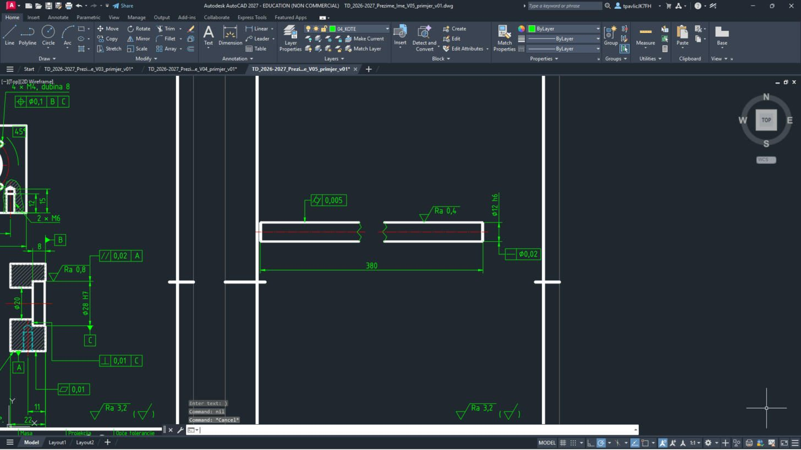
Okvir pravocrtnosti Ø0,02 uz kotu promjera, okvir cilindričnosti 0,005 iznad vodilice, Ra 0,4 na plaštu i Ra 3,2 (√) iznad zaglavlja.
OList 3 – zaglavlje
24
Približi zaglavlje:
ZOOM Enter, W Enter, 475,5 Enter, 665,60 Enter. Upiši TEXTEDIT Enter i promijeni tekstove (klik na tekst → upiši novi → Enter; na kraju Esc):Upiši:
ZOOM Enter W Enter 475,5 Enter 665,60 Enter TEXTEDIT Enter| Polje | Sada piše (kopija lista 1) | Upiši |
|---|---|---|
| Mjerilo | 1 µm = 2 mm | 1:1 |
| Materijal | – | C45, bru\U+0161eno |
| Opće tolerancije | – | ISO 2768-m |
| Naziv | Tolerancijska polja | Vodilica %%c12 \U+00D7 380 |
| ispod naziva | Ø12 i Ø28: H7, g6 … | os PS-1 |
| Broj dokumenta | TD-V05-1 | PS1-01-005 |
| List | 1/3 | 3/3 |
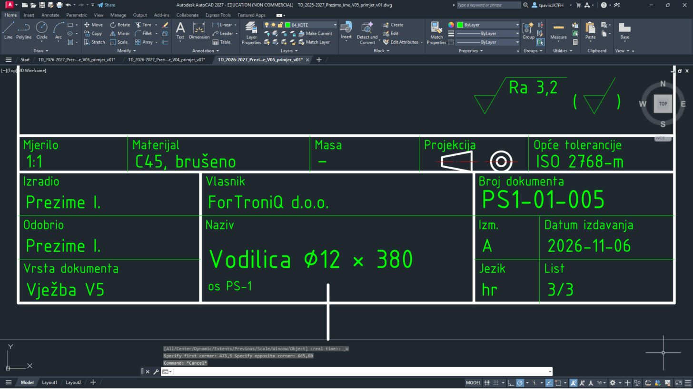
Slovo š možeš upisati izravno s tipkovnice (u tablici je zapisano kao
\U+0161). Ø je %%c, × je \U+00D7.25
Cijeli crtež:
ZOOM Enter E Enter.Upiši:
ZOOM Enter E Enter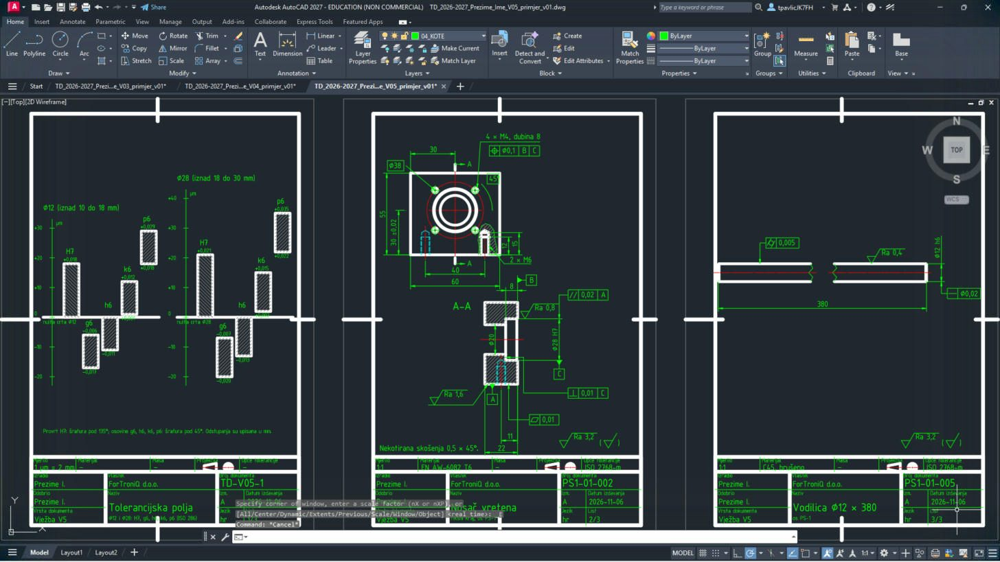
Tri gotova lista: dijagrami tolerancijskih polja, nosač vretena s tolerancijama i vodilica.
RIspis u PDF
26
Pritisni Ctrl + P. Postavke iz V1 su zapamćene (DWG To PDF.pc3, ISO full bleed A4, Window, Center the plot, monochrome.ctb). Za svaki list klikni Window< i upiši njegova dva kuta iz tablice.


27
Namjesti Scale prema tablici, klikni OK i spremi PDF pod imenom iz tablice.
| List | Window – prvi kut | Window – drugi kut | Scale | Ime PDF-a |
|---|---|---|---|---|
| 1 – tolerancijska polja | 0,0 | 210,297 | 1:1 | TD_2026-2027_Prezime_Ime_V05_L1 |
| 2 – nosač vretena | 230,0 | 440,297 | 1:1 | TD_2026-2027_Prezime_Ime_V05_L2 |
| 3 – vodilica | 460,0 | 670,297 | 1:1 | TD_2026-2027_Prezime_Ime_V05_L3 |
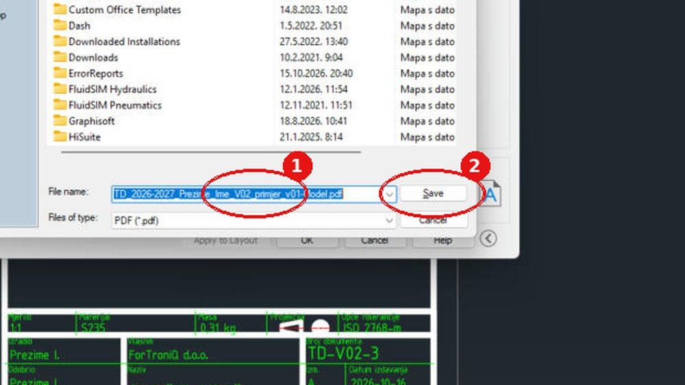
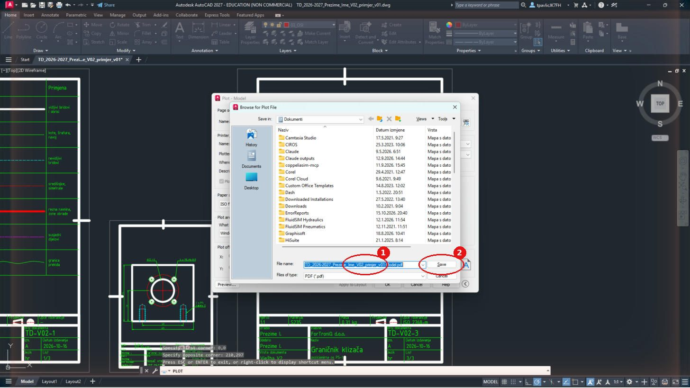
ZSpremi, vrati postavke i predaj
28
Vrati postavke:
DYNMODE → 3, OSMODE → 4133, GRIDMODE → 1; zatim QSAVE Enter.Upiši:
DYNMODE Enter 3 Enter OSMODE Enter 4133 Enter GRIDMODE Enter 1 Enter QSAVE Enter29
U sustavu za predaju, u zadaći za V5, predaj
TD_2026-2027_Prezime_Ime_V05.dwg i …_L1.pdf, …_L2.pdf, …_L3.pdf, uz ispunjen radni list.Prije predaje otvori svaki PDF i usporedi ga sa slikom na vrhu upute.